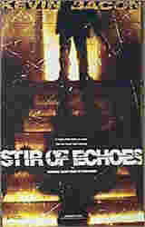

Contents | Features | Reviews | Books | Archives | Store |
 |
|
| Movie Credits | Buy It! |
Stir of Echoes
Review by
Cynthia Fuchs
Posted 10 September 1999
|  |
Directed
by David
Koepp Written
by David Koepp |
This proceeding is premised on
Joe's dim-bulb existence. He's a regular joe who works as a telephone company
lineman, living in a blue-collar Chicago area. He's got a supportive wife named
Maggie (Kathryn Erbe, the terrifically manipulative death row inmate in Oz)
and a bright, cute kid named Jake (six-commercial veteran Zachary David Cope).
He seems to have everything he wants within easy reach, like his friends who are
also his neighbors Frank (Kevin Dunn) and Harry (Conor O'Farrell). And yet, all
this stability seems to be making Tom restless. While he assures Maggie that
he's a "happy guy," he's clearly not thrilled with his lot in life.
"I never wanted to be famous," he sighs. "I just didn't expect to
be so ordinary." These would be, as they say, famous last words.
Tom's decision to be hypnotized
looks like a reaction to his ordinariness. And indeed, the experience send him
into some other realm, cornily marked by a literal image of Lisa's invocation
(he's in a movie theater, he's floating toward the screen, he sees words on the
screen, yadda yadda). As if this hokiness isn't enough, following the hypnosis,
Tom begins to suffer some peculiar traumas, like incapacitating headaches and
violent visions. He sees scary fragments of images, nothing he can recognize
exactly, something like memories, only they're not his own, they're someone
else's. These images are effectively taut and sketchy, hard to read and
accompanied by a predictably spooky soundtrack. The film also makes the
requisite-to-be-self-conscious inside jokes, too, associating Tom's apparitions
with well-known pop-cultural images of alienation and mayhem via movies on
background televisions, like The Incredible Shrinking Man and Night of
the Living Dead.
But such cleverness soon turns
ugly, and then worse, it turns trite. As seems to be the fashion these days, Tom
sees dead people. More precisely, he sees a girl with creepy red wounds on her
pale blue-veined face: she's sitting on his sofa one night while he's clicking
the remote. Imagine this terror this poses for a guy who's used to controlling
that particular gadget. The experience horrifies Tom and alarms Maggie when she
hears about it: at first she thinks he's dreaming, and wonders aloud who this
other girl is, and Tom berates her for being jealous of a ghost. Silly her.
Naturally, Tom initially attempts
to shut the whole business down. He thinks that Lisa has "opened" his
mind, and he demands that she change it back. He storms back to Lisa's apartment
to demand that she "unf*ck'' his mind. As this proves impossible, Tom's
increasingly literal visions lead him to think that there's a dark secret being
covered up by folks in the neighborhood (this involves a girl gone missing some
years before: and whoa! she looks like the sofa girl). Tom feels a moral
compulsion to dig it up. He's encouraged in this endeavor by the sudden
realization that Jake sees dead people too, even spends time with this girl on
the sofa. Father and son begin to bond, whispering late into the night. Maggie,
no surprise, feels left out.
As Tom's obsession grows, the
film shape shifts from psycho-thriller to male melodrama. Once the mystery
breaks down into easy-fit pieces (there are no last minute, Sixth Sense-ian
twists here: the trajectory toward resolution is laid out plainly and early),
the movie actually starts to dig up its own hidden possibilities, though it
doesn't get very far with them. Most interesting is the form of Tom's turmoil,
because it represents the dismantling of his domestic harmony. He becomes
incapacitated, a la Richard Dreyfus in Close Encounters. He refuse to
shave, bathe, and go to work. He sits on the sofa for hours on end. He starts
gulping orange juice and fish-head blender-shakes. Bacon does this well, dialing
up his wiry whininess little by little, until he's all bulging neck veins and
ferretty face.
As Tom is less understandable,
the movie turns its emotional focus over to Maggie. Pragmatic and intelligent,
she's unnerved by this crisis: she can't be a traditional wife when he gives up
on the husband thing. Where Tom and Jake share their communings, she's left out
of their loop, which means she's in an awkward position, both understandable to
and less informed than viewers. When she starts to investigate, the audience
follows along. The explanations she hears are too corny by half, sort of
ghost-story detritus by way of a Scatman-Crothers-in-The-Shining kind of
character. One night she tracks down what looks like a self-help gathering of
similarly afflicted people, and she's informed that her kid has "the eyes
on him," that her husband is a "receiver."
While Maggie more or less figure out her own sh*t, Tom seems to undergo a life-change, from depressed to enlightened, from passive to self-assertive. Tom does learn how to "be a man," but only in the most regular ways: he rips up the house, he uncovers and fights evil, he reunites with the super-patient little woman. And he does all this, disturbingly, over a girl's corpse.
Contents | Features | Reviews
| Books | Archives | Store
Copyright © 1999 by Nitrate Productions, Inc. All
Rights Reserved.